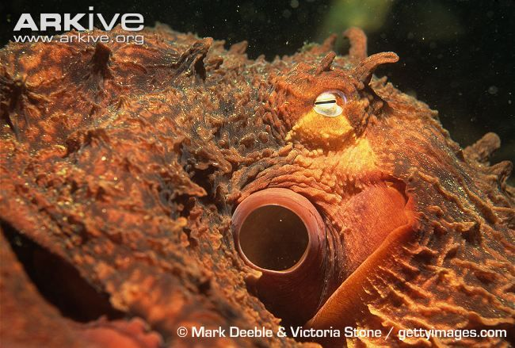
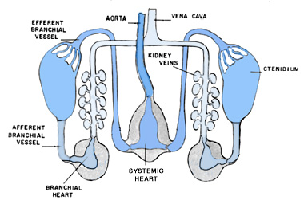
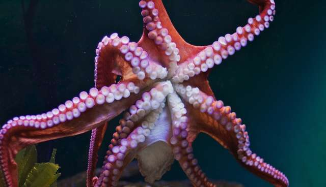

Octopuses are extremely intelligent. They have been known to solve complex problems in captivity. They play with toys and are great escape artists. They can recognize particular people and display emotions, such as anger.
Chameleons aren't the only animals with color shifting skin! Octopuses are able to change the color and texture of their skin at will. This makes them great camouflage artists, which in turns makes them hard to find and dangerous predators!
Octopuses have three hearts, eight arms, suckers on their arms, a highly developed central nervous system, a beak, and a siphon.
The siphon is used for movement, to shoot ink, and to draw water over the octopus's gills to breathe.
Two of the octopus's hearts pump blood to their gills, while the third handles pumping blood to the rest of the body.
The octopus has arms, not tentacles! Each arm is covered with very sensitive suckers that send tactile and taste information back to the brain. The octopus can feel and taste with his suckers!

Want to learn more? Here's where I got my info:
The Giant Pacific Octopus by Julie Kalupa
from the University of Wisconsin - La Crosse